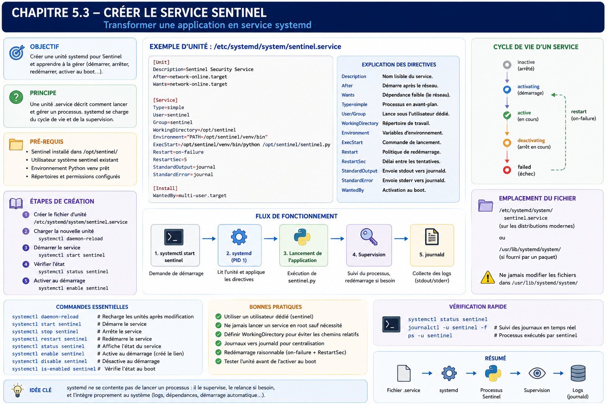

Chapitre 5.3 — Créer le service Sentinel
Campagne 5 — systemd et services
« Une application devient réellement exploitable lorsqu'elle peut être installée, démarrée, arrêtée, supervisée et reconstruite automatiquement, sans intervention humaine. »
Vous êtes ici
Partie I — Construire un socle sécurisé
Campagne 5 — systemd et les services
5.1 Comprendre systemd
5.2 Les unités (.service, .socket, .target…)
► 5.3 Créer le service Sentinel
5.4 Sandboxing systemd
5.5 Capacités Linux
5.6 Journalisation avec journald
5.7 Supervision et redémarrage automatique
5.8 Mission : rendre Sentinel résilient
Objectifs pédagogiques
À la fin de ce chapitre, vous serez capable de :
- créer un véritable service systemd ;
- comprendre chacune des sections d'une unité
.service; - choisir les directives adaptées à une application serveur ;
- intégrer Sentinel dans le cycle de vie du système ;
- préparer le service aux futurs mécanismes de sandboxing, de supervision et de durcissement.
Pourquoi ce chapitre existe
Jusqu'à présent, Sentinel est exécuté manuellement.
python3 sentinel.py
ou
./sentinel
Cette méthode suffit pendant le développement. Elle devient rapidement problématique en production. Imaginons quelques situations. Le serveur redémarre pendant la nuit. Qui relance Sentinel ? Un administrateur quitte son terminal SSH. L'application continue-t-elle de fonctionner ? Le processus se termine brutalement. Comment détecter le problème ? Les journaux sont-ils correctement centralisés ? Comment savoir précisément :
- quand le service a démarré ;
- sous quel utilisateur ;
- avec quelles options ;
- combien de fois il a redémarré ?
Une application de production doit répondre à toutes ces questions. Le simple fait d'exécuter un binaire ne suffit plus. Nous allons maintenant transformer Sentinel en un service système.
Théorie détaillée
La philosophie
Avant d'écrire la moindre ligne, prenons un instant pour réfléchir. Que doit savoir systemd ? Il doit connaître :
- le nom du service ;
- son rôle ;
- le programme à lancer ;
- son utilisateur ;
- son groupe ;
- ses dépendances ;
- son comportement à l'arrêt ;
- son comportement après un crash.
Autrement dit, une unité décrit le contrat d'exploitation de l'application.
Où créer l'unité ?
Comme vu dans le chapitre précédent, nous placerons notre fichier dans : /etc/systemd/system/ Nous obtenons donc :
Pourquoi ici ? Parce que Sentinel est une application développée par l'entreprise. Elle ne provient pas d'un paquet système AlmaLinux. Plus tard, lorsque Sentinel sera distribué sous forme de RPM, nous déplacerons naturellement cette unité dans : /usr/lib/systemd/system/ Le paquet installera automatiquement le fichier. Pour le moment, nous travaillons encore comme développeurs.
Structure d'une unité
Une unité comporte généralement trois sections.
[Unit]
...
[Service]
...
[Install]
...
Chacune possède une responsabilité bien précise.
La section [Unit]
Cette première section décrit l'identité du service. Par exemple.
[Unit]
Description=Sentinel Security Platform
Documentation=https://sentinel.example
After=network-online.target
Wants=network-online.target
On remarque immédiatement plusieurs informations. Le service :
- possède une description ;
- référence sa documentation ;
- dépend du réseau.
Cette section ne contient encore aucune information sur l'application elle-même. Elle décrit uniquement son contexte.
Pourquoi network-online.target ?
Beaucoup d'administrateurs utilisent :
After=network.target
sans réellement connaître la différence. Pourtant, elle est importante. network.target signifie essentiellement :
Le sous-système réseau est démarré.
Cela ne garantit pas que les interfaces disposent déjà d'une connectivité. À l'inverse, network-online.target indique que le gestionnaire réseau a terminé sa procédure d'attente, à condition que le service *-wait-online correspondant soit activé. Il ne garantit ni l'accès à Internet, ni la disponibilité de FreeIPA ou d'une base distante. Pour Sentinel, qui communique immédiatement avec :
- FreeIPA ;
- des agents ;
- une base de données éventuelle ;
ce choix peut être pertinent au démarrage, mais il ne remplace jamais les délais, les nouvelles tentatives et la gestion des pertes de réseau dans l'application.
La section [Service]
Nous arrivons au cœur de l'unité. Exemple minimal.
[Service]
Type=simple
ExecStart=/opt/sentinel/bin/sentinel
User=sentinel
Group=sentinel
Chaque directive mérite une explication.
Type=simple et l'alternative Type=exec
Type=simple est le choix compatible avec les versions anciennes et récentes de systemd lorsque le processus lancé reste au premier plan. Il signifie simplement :
Le processus lancé
est
le service.
Avec Type=simple, systemd considère le service démarré dès la création du processus qui doit exécuter la commande ; il peut ainsi annoncer brièvement un succès avant qu'un échec d'execve() soit constaté. Les versions de systemd à partir de 240 proposent Type=exec, qui n'annonce le démarrage qu'après l'exécution effective du binaire et remonte plus directement une erreur d'utilisateur, de chemin ou d'exécutable. Une formation destinée à plusieurs générations d'AlmaLinux conserve ici simple ; sur une version récente vérifiée avec systemd --version, exec est souvent préférable. Nous reviendrons plus tard sur :
notifyforkingoneshotidle
qui répondent à des besoins particuliers.
ExecStart
La directive la plus célèbre.
ExecStart=/opt/sentinel/bin/sentinel
Elle indique le programme principal. Une erreur fréquente consiste à vouloir écrire :
ExecStart=/bin/bash -c "..."
Cette approche doit rester exceptionnelle. systemd est capable de lancer directement l'application. Il est préférable d'éviter les couches inutiles.
Une ligne ExecStart= n'est pas interprétée par un shell : les redirections (>), les tubes (|), les jokers et les constructions comme $() n'y ont pas leur sens habituel. Si une véritable syntaxe shell est indispensable, il faut appeler explicitement /bin/sh -c et documenter ce choix ; dans les autres cas, les arguments sont passés directement au programme.
User
Pendant longtemps, de nombreux services Linux fonctionnaient sous : root Aujourd'hui, cette pratique est largement déconseillée. Nous créerons un utilisateur dédié. sentinel Puis :
User=sentinel
Ainsi, même si l'application est compromise, l'attaquant ne récupère pas immédiatement les privilèges administrateur. Cette décision constitue l'une des mesures de sécurité les plus importantes du chapitre.
Group
Même logique.
Group=sentinel
L'application fonctionne avec :
- un utilisateur dédié ;
- un groupe dédié.
Cette séparation facilitera ensuite :
- les permissions ;
- SELinux ;
- les capacités Linux ;
- le sandboxing.
Une première unité complète
Nous obtenons désormais :
[Unit]
Description=Sentinel Security Platform
After=network-online.target
Wants=network-online.target
[Service]
Type=simple
ExecStart=/opt/sentinel/bin/sentinel
User=sentinel
Group=sentinel
[Install]
WantedBy=multi-user.target
Ce fichier est volontairement très simple. Pourtant, il suffit déjà à transformer Sentinel en véritable service systemd. Les prochains chapitres viendront progressivement enrichir cette unité.
La section [Install]
Elle est souvent mal comprise. Prenons :
WantedBy=multi-user.target
Cette directive ne sert absolument pas au démarrage immédiat. Elle indique uniquement :
Lorsque le service est activé (
enable), il doit être rattaché à cette Target.
Concrètement,
systemctl enable sentinel
créera un lien symbolique vers : multi-user.target.wants/ Cette distinction est importante. enable et start répondent à deux besoins totalement différents.
Création de l'utilisateur Sentinel
Avant de démarrer le service, l'utilisateur doit exister. Par exemple.
useradd \
--system \
--home /var/lib/sentinel \
--shell /sbin/nologin \
sentinel
Plusieurs éléments méritent d'être commentés. --system crée un compte système. Le répertoire personnel pourra accueillir :
- la configuration ;
- des données ;
- certains certificats.
Le shell : /sbin/nologin interdit toute connexion interactive. L'utilisateur existe uniquement pour exécuter l'application. Cette approche est conforme au principe du moindre privilège.
Construire une unité professionnelle
L'unité que nous avons écrite est volontairement minimaliste. Elle fonctionne. Mais elle ne répond pas encore aux exigences d'une exploitation professionnelle. Une application de production possède généralement des besoins supplémentaires. Par exemple :
- définir un répertoire de travail ;
- charger des variables d'environnement ;
- gérer proprement les arrêts ;
- redémarrer automatiquement après un incident ;
- limiter les délais d'arrêt ;
- distinguer les différents codes de retour.
Nous allons enrichir progressivement notre unité.
Le répertoire de travail
Prenons un exemple. Sentinel utilise plusieurs fichiers :
Ces chemins peuvent être relatifs. systemd permet de définir explicitement le répertoire de travail.
WorkingDirectory=/var/lib/sentinel
Ainsi, tous les chemins relatifs utilisés par l'application deviennent cohérents. Cette directive évite de nombreuses erreurs lors des déploiements.
Les variables d'environnement
Une application moderne est rarement entièrement configurée par sa ligne de commande. Elle utilise souvent des variables d'environnement. Exemple.
Environment=SENTINEL_ENV=production
ou
Environment=PYTHONUNBUFFERED=1
La seconde directive est particulièrement intéressante pour une application Python. Elle désactive le buffering standard. Les journaux apparaissent immédiatement dans journald, sans attendre le remplissage du tampon. Pour une application serveur, c'est généralement le comportement recherché.
Les fichiers d'environnement
Plutôt que de multiplier les directives :
Environment=
systemd permet également d'utiliser un fichier dédié.
EnvironmentFile=/etc/sysconfig/sentinel
Ce fichier peut contenir :
SENTINEL_PORT=8443
SENTINEL_LOG_LEVEL=INFO
SENTINEL_DATA=/var/lib/sentinel
Cette approche présente plusieurs avantages. Le fichier de service reste stable. La configuration devient indépendante du cycle de vie du service. Cette séparation sera particulièrement utile lorsque Sentinel sera distribué sous forme de RPM.
Un fichier d'environnement reste toutefois une configuration, pas un coffre-fort : ses valeurs peuvent être accessibles à des processus privilégiés et apparaître dans certains outils de diagnostic. Les mots de passe, clés privées et jetons doivent être fournis par un gestionnaire de secrets ou, lorsque la version de systemd le permet, par LoadCredential=. Le service lit alors le secret depuis le répertoire indiqué par $CREDENTIALS_DIRECTORY, sans le placer dans la ligne de commande ni dans une variable d'environnement globale.
Les commandes avant démarrage
Il arrive qu'une application nécessite quelques opérations préparatoires. Par exemple :
- vérifier un certificat ;
- créer un répertoire ;
- contrôler un fichier de configuration ;
- attendre une ressource.
systemd propose plusieurs directives. La plus utilisée est :
ExecStartPre=
Exemple.
ExecStartPre=/usr/bin/test -f /etc/sentinel/config.yml
Si cette commande échoue, le service ne démarre pas. Cette possibilité est souvent préférable à une vérification réalisée directement dans le code de l'application. Pourquoi ? Parce qu'elle est visible, documentée et intégrée au cycle de vie systemd.
Les commandes après démarrage
Autre possibilité.
ExecStartPost=
Elle permet par exemple :
- d'enregistrer un état ;
- d'envoyer une notification ;
- de déclencher une supervision.
Attention toutefois. Une unité ne doit pas devenir un script Bash complexe. Ces commandes doivent rester simples.
L'arrêt propre
Nous avons déjà vu que systemd envoie généralement : SIGTERM Avant : SIGKILL L'application doit donc être capable :
- de fermer ses sockets ;
- de terminer les traitements en cours ;
- de libérer les ressources.
systemd permet également d'exécuter une commande spécifique avant l'arrêt.
ExecStop=
Cette directive reste relativement rare. Elle est surtout utile lorsque l'arrêt nécessite une action explicite. Dans le cas de Sentinel, nous privilégierons une gestion correcte du signal SIGTERM.
Le redémarrage automatique
C'est probablement la directive la plus utilisée.
Restart=on-failure
Cette ligne paraît anodine. Elle change pourtant profondément le comportement du service. Sans elle :
Avec elle :
Cette fonctionnalité améliore considérablement la disponibilité.
Les différentes politiques de redémarrage
systemd propose plusieurs stratégies.
no
Jamais de redémarrage.
always
Redémarrer après toute terminaison du processus, y compris une sortie propre décidée par l'application. Une commande explicite systemctl stop ne déclenche toutefois pas la politique de redémarrage. Ce comportement reste rarement adapté à un serveur classique.
on-success
Redémarrer uniquement si le programme s'est terminé correctement. Cas d'usage très particulier.
on-failure
Le choix le plus courant. Le service est relancé uniquement après :
- un crash ;
- un signal anormal ;
- un code de retour indiquant une erreur.
C'est généralement la stratégie retenue pour les applications serveur.
Éviter les boucles infinies
Imaginons une erreur de configuration. Sentinel démarre. Il plante immédiatement. systemd redémarre. Il replante. Le cycle continue. Pour éviter ce phénomène, plusieurs directives existent. Par exemple :
RestartSec=5
systemd attendra cinq secondes avant une nouvelle tentative. Ce délai limite :
- la consommation CPU ;
- le bruit dans les journaux ;
- les boucles de redémarrage.
Les délais d'arrêt
Prenons un scénario. Sentinel traite actuellement plusieurs centaines de connexions TLS. L'administrateur exécute :
systemctl stop sentinel
L'application a besoin de quelques secondes pour :
- terminer les traitements ;
- fermer les sockets ;
- enregistrer son état.
systemd attend. Pendant combien de temps ? La réponse est donnée par :
TimeoutStopSec=30
Si le délai est dépassé, systemd considère que le service refuse de s'arrêter. Le comportement normal devient alors :
Cette directive doit être choisie avec soin. Un délai trop court peut interrompre brutalement des traitements. Un délai trop long peut ralentir les opérations d'exploitation.
KillMode
Voici une directive très peu connue, mais particulièrement importante.
KillMode=
Elle détermine quels processus seront arrêtés. Par défaut, systemd utilise généralement : control-group Autrement dit, l'ensemble des processus appartenant au cgroup du service est arrêté. Pour Sentinel, ce comportement est généralement celui attendu. Si plusieurs workers Python sont lancés, ils seront tous arrêtés proprement. Cette directive illustre parfaitement l'intérêt des cgroups étudiés dans le chapitre précédent.
Le fichier de service évolue
Notre unité ressemble désormais à ceci.
[Unit]
Description=Sentinel Security Platform
After=network-online.target
Wants=network-online.target
[Service]
Type=simple
User=sentinel
Group=sentinel
WorkingDirectory=/var/lib/sentinel
EnvironmentFile=/etc/sysconfig/sentinel
ExecStart=/opt/sentinel/bin/sentinel
Restart=on-failure
RestartSec=5
TimeoutStopSec=30
[Install]
WantedBy=multi-user.target
Cette unité reste volontairement sobre. Pourtant, elle répond déjà à de nombreux besoins d'exploitation. Dans les chapitres suivants, nous y ajouterons progressivement :
- le sandboxing ;
- les capacités Linux ;
- les restrictions de sécurité ;
- les limites de ressources.
L'unité évoluera au même rythme que Sentinel.
Les rechargements de configuration
Toutes les applications ne réagissent pas de la même manière lorsqu'un administrateur modifie leur configuration. Prenons quelques exemples.
Cas n°1
L'application doit être entièrement redémarrée.
Cas n°2
L'application sait relire son fichier de configuration.
Cette seconde approche est souvent préférable. Elle limite les interruptions de service. systemd permet d'intégrer ce comportement.
ExecReload
Une unité peut définir une commande spécifique de rechargement. Par exemple :
ExecReload=/bin/kill -HUP $MAINPID
Ici, systemd envoie le signal : SIGHUP au processus principal. L'application décide ensuite :
- de relire sa configuration ;
- de recharger ses certificats ;
- de rouvrir certains fichiers ;
- de poursuivre son exécution.
Pour Sentinel, nous implémenterons progressivement cette fonctionnalité. L'objectif sera de pouvoir modifier :
- certains paramètres ;
- les niveaux de journalisation ;
- certains certificats ;
sans interrompre le service.
Les signaux
systemd s'appuie largement sur les signaux Unix. Les principaux sont : SIGTERM Arrêt propre. SIGKILL Arrêt immédiat. Impossible à intercepter. SIGHUP Traditionnellement utilisé pour demander :
Recharge ta configuration.
SIGUSR1
SIGUSR2
Signaux laissés à la disposition des applications. Ils sont souvent utilisés pour des fonctions spécifiques. Une application bien intégrée à Linux réagit correctement à ces signaux.
Les codes de retour
Une application ne se contente pas de :
- fonctionner ;
- planter.
Elle retourne également un code de sortie. Par exemple :
Autres valeurs.
Ces valeurs sont choisies par l'application. systemd peut ensuite adapter son comportement. Par exemple, ne pas redémarrer un service dont la configuration est invalide.
Les états d'échec
Lorsqu'un service échoue, systemd mémorise cet état.
systemctl status sentinel
peut afficher : Active: failed Ce statut est précieux. Il permet :
- à la supervision ;
- aux administrateurs ;
- aux outils d'automatisation ;
de détecter immédiatement une anomalie. Contrairement à un simple script lancé en arrière-plan, le système sait qu'un problème est survenu.
Type=notify
Jusqu'à présent, nous avons utilisé :
Type=simple
Ce mode convient à de nombreuses applications. Il existe cependant une approche plus avancée.
Type=notify
Dans ce mode, systemd ne considère pas le service comme opérationnel immédiatement. C'est l'application elle-même qui indique : READY=1 lorsqu'elle estime être totalement prête. Pourquoi est-ce intéressant ? Prenons Sentinel. Au démarrage, plusieurs opérations peuvent être nécessaires.
- lecture de la configuration ;
- ouverture des certificats ;
- initialisation des plugins ;
- connexion à FreeIPA ;
- création du cache.
Avec Type=simple, systemd ne sait pas que l'application a fini son initialisation ; même Type=exec, sur les versions qui le proposent, confirme seulement que l'exécutable a bien été lancé. Avec Type=notify, le gestionnaire attend la confirmation de l'application. Cette différence devient importante lorsque plusieurs services dépendent de Sentinel.
Faut-il utiliser Type=notify ?
Pour une petite application, probablement pas. Pour une application critique, souvent oui. Nous commencerons Sentinel avec :
Type=simple
afin de limiter la complexité. Puis, dans les campagnes consacrées à la haute disponibilité, nous ferons évoluer le service vers :
Type=notify
Cette progression suit la philosophie générale du manuel : commencer simplement, puis enrichir progressivement l'architecture.
Les dépendances implicites
Une erreur fréquente consiste à déclarer trop de dépendances. Par exemple :
After=firewalld.service
After=chronyd.service
After=systemd-journald.service
After=...
Plus une unité contient de dépendances, plus le graphe devient complexe. Un architecte cherche au contraire à limiter ces relations. La question à se poser est simple.
Sentinel peut-il réellement fonctionner si ce service n'existe pas ?
Si la réponse est oui, la dépendance est probablement inutile. Une architecture simple est généralement une architecture plus robuste.
Le fichier d'unité n'est pas un script
Une tentation apparaît souvent. Ajouter progressivement :
ExecStartPre
ExecStartPre
ExecStartPre
ExecStartPost
ExecStartPost
ExecStop
ExecReload
...
Puis :
if
then
else
...
Le fichier devient un pseudo-script Bash. C'est une mauvaise direction. Une unité doit :
- décrire ;
- orchestrer ;
- superviser.
La logique métier reste dans Sentinel. La logique d'automatisation complexe reste dans Ansible. Cette séparation des responsabilités est l'un des fondements d'une architecture maintenable.
Une unité évolutive
À ce stade de la formation, notre unité reste relativement simple. C'est volontaire. Au fil des prochains chapitres, nous y ajouterons progressivement : Sandboxing ↓ Capabilities Linux ↓ Limitations mémoire ↓ Restrictions système de fichiers ↓ Protection des namespaces ↓ Journalisation avancée ↓ Watchdog À la fin de la campagne, le lecteur disposera d'une unité comparable à celles utilisées dans les infrastructures professionnelles les plus exigeantes.
Approfondissement
Un service systemd est un contrat d'exploitation
Lorsqu'un ingénieur écrit une unité systemd, il ne décrit pas seulement comment lancer un exécutable. Il décrit tout le contrat qui lie l'application au système d'exploitation. Prenons Sentinel. L'application répond à une question :
Comment collecter et traiter les événements de sécurité ?
L'unité systemd répond à une autre :
Comment exploiter Sentinel de manière fiable pendant plusieurs années ?
Ces deux responsabilités sont volontairement séparées. L'application ne doit jamais connaître :
- la politique de redémarrage ;
- les dépendances du système ;
- le niveau de privilège ;
- les restrictions mémoire ;
- les contraintes CPU ;
- la journalisation ;
- la supervision.
Toutes ces informations appartiennent au système d'exploitation. C'est exactement ce que décrit le fichier .service.
Un service est une promesse
Prenons cette unité.
Restart=on-failure
TimeoutStopSec=30
User=sentinel
Elle n'exprime pas une configuration. Elle exprime une promesse.
Si Sentinel plante,
je le relancerai.
──────────────
Si Sentinel doit s'arrêter,
je lui laisserai trente secondes.
──────────────
Sentinel ne sera jamais exécuté en root.
Une unité systemd est donc beaucoup plus proche d'une politique d'exploitation que d'un simple fichier de configuration.
Le cycle de vie devient prévisible
Avant systemd, chaque démon gérait son propre cycle de vie. Chaque développeur avait sa manière de :
- démarrer ;
- s'arrêter ;
- redémarrer ;
- produire des logs.
Aujourd'hui, les comportements deviennent homogènes. Quel que soit le service :
L'exploitant n'a plus besoin d'apprendre une nouvelle procédure pour chaque application. Cette homogénéité réduit énormément les erreurs humaines.
Une bonne unité contient très peu de logique
Lorsque l'on ouvre une unité systemd de qualité, on remarque immédiatement une caractéristique. Elle est courte. Très courte. Pourquoi ? Parce que toute la logique métier reste dans l'application. Toute la logique d'automatisation complexe reste dans Ansible. L'unité se contente de décrire :
- le cycle de vie ;
- les dépendances ;
- les contraintes.
C'est précisément ce qui la rend robuste.
Concevoir la politique
Un architecte ne rédige pas un fichier .service. Il définit un service d'infrastructure. Prenons Sentinel. Avant même d'écrire une ligne d'unité, il répond aux questions suivantes. Qui possède le service ? Équipe Sécurité. Sous quel compte fonctionne-t-il ? Utilisateur sentinel. Que se passe-t-il après un crash ? Redémarrage automatique. Quand peut-il démarrer ? Après la disponibilité du réseau. Que devient-il lors d'un arrêt du serveur ?
Arrêt propre.
Libération des connexions.
Fermeture des fichiers.
Fin des traitements.
L'unité devient simplement la traduction technique de ces décisions.
Une unité doit survivre aux évolutions
Supposons que Sentinel soit profondément modifié.
- nouvelle architecture interne ;
- nouveau langage ;
- nouveaux modules.
L'unité devra très peu évoluer. Pourquoi ? Parce qu'elle décrit le service, pas son implémentation. Cette stabilité constitue un énorme avantage dans les grandes infrastructures.
Point de vue offensif
Un attaquant apprécie les applications qui ne respectent pas le cycle de vie normal du système. Par exemple.
nohup mon_application &
Ou encore :
screen -S serveur
python serveur.py
Pourquoi ? Parce que ces applications échappent souvent :
- aux journaux ;
- aux procédures ;
- à la supervision ;
- aux contrôles d'intégrité.
Elles deviennent difficiles à inventorier. Et ce qui est difficile à inventorier est souvent difficile à sécuriser.
Les redémarrages infinis
Autre situation classique. Une application contient une erreur. Elle plante immédiatement. systemd la redémarre. Elle replante. La boucle continue. Un attaquant peut parfois exploiter ce comportement pour provoquer :
- une consommation CPU importante ;
- une saturation des journaux ;
- un déni de service.
C'est précisément pour cette raison que les politiques de redémarrage doivent être soigneusement réfléchies.
En entreprise
Dans une infrastructure de plusieurs centaines de serveurs, les unités systemd deviennent un élément du patrimoine logiciel. Prenons Sentinel. Le fichier : sentinel.service est généralement :
- versionné dans Git ;
- intégré au paquet RPM ;
- déployé par Ansible ;
- vérifié lors des audits.
L'unité suit exactement le même cycle de vie que l'application. Une modification de :
Restart=always
peut nécessiter :
- une revue de code ;
- une validation QA ;
- une qualification sécurité.
Pourquoi ? Parce qu'elle modifie directement le comportement de production.
Une unité fait partie du produit
Dans beaucoup d'équipes, on considère encore le fichier .service comme un simple "fichier de configuration". En réalité, il fait partie intégrante du produit. Livrer Sentinel sans son unité systemd, c'est livrer une application incomplète.
Culture technique
Lorsque systemd est apparu, de nombreux développeurs ont progressivement cessé d'écrire le code traditionnel des démons Unix. Autrefois, un démon devait généralement :
- appeler
fork(); - appeler
setsid(); - fermer les descripteurs de fichiers ;
- rediriger les sorties ;
- créer un fichier PID ;
- gérer lui-même les signaux.
Aujourd'hui, une application moderne fonctionne généralement au premier plan (foreground process). C'est systemd qui se charge :
- de l'isolation ;
- de la supervision ;
- de la journalisation ;
- des cgroups ;
- des signaux.
Cette évolution explique pourquoi de nombreuses applications récentes semblent beaucoup plus simples que leurs équivalents historiques. Le code d'infrastructure a été déplacé vers le système d'exploitation.
Piège classique
Vouloir tout faire dans l'unité systemd
On rencontre parfois des fichiers de plusieurs centaines de lignes.
ExecStartPre=...
ExecStartPre=...
ExecStartPost=...
ExecStop=...
ExecReload=...
ExecCondition=...
Puis viennent :
- des scripts Bash ;
- des tests ;
- des traitements métier.
Cette approche est rarement satisfaisante. Une règle simple peut être retenue. Si une logique nécessite plusieurs dizaines de lignes, elle n'a probablement plus sa place dans l'unité. L'unité décrit le service. L'application réalise le métier. Ansible automatise le déploiement. Chaque composant conserve une responsabilité clairement définie.
TP 1 — Installer et déclarer le service Sentinel
Objectif
Créer, installer et exploiter le premier service Sentinel sous systemd. À la fin de ce laboratoire, Sentinel devra :
- démarrer automatiquement ;
- fonctionner sous un utilisateur dédié ;
- produire ses journaux dans
journald; - survivre à un redémarrage du serveur ;
- être administrable exclusivement avec
systemctl.
Architecture
Étape 1 — Créer l'utilisateur
Créer le compte système.
useradd \
--system \
--home /var/lib/sentinel \
--shell /sbin/nologin \
sentinel
Vérifier ensuite :
id sentinel
Étape 2 — Installer Sentinel
Créer une arborescence propre.
/opt/sentinel/
├── bin/
├── etc/
├── plugins/
└── data/
Installer le binaire.
Étape 3 — Écrire sentinel.service
Créer le fichier : /etc/systemd/system/sentinel.service avec les directives étudiées dans ce chapitre.
TP 2 — Valider le cycle de vie et la reprise
Étape 4 — Recharger systemd
systemctl daemon-reload
Comprendre pourquoi cette étape est indispensable.
Étape 5 — Démarrer le service
systemctl start sentinel
Puis vérifier :
systemctl status sentinel
Identifier :
- le PID ;
- le compte utilisateur ;
- les journaux ;
- les éventuels messages d'erreur.
Étape 6 — Activer au démarrage
systemctl enable sentinel
Redémarrer ensuite la machine. Vérifier que Sentinel est automatiquement relancé.
Étape 7 — Simuler une panne
Terminer brutalement le processus. Observer :
- la réaction de systemd ;
- le comportement de
Restart=on-failure; - les journaux générés.
Mission d'ingénieur
Votre entreprise développe une dizaine de services Python. Chaque équipe possède sa propre manière de les lancer. La direction décide que toute nouvelle application devra respecter un standard unique. Vous devez rédiger ce standard. Il devra préciser notamment :
- la structure des unités ;
- les conventions de nommage ;
- les utilisateurs système dédiés ;
- les politiques de redémarrage ;
- les emplacements des fichiers ;
- la gestion des journaux ;
- les règles de packaging RPM ;
- les exigences Ansible.
Votre proposition servira de référence pour l'ensemble des développements futurs.
Impact sur Sentinel
Sentinel est désormais un véritable service système. À partir de maintenant, nous ne lancerons plus l'application avec :
python sentinel.py
mais avec :
systemctl start sentinel
Ce changement paraît anodin. Il transforme pourtant complètement l'exploitation de l'application. Les prochains chapitres enrichiront progressivement cette unité avec :
- le sandboxing ;
- les capacités Linux ;
- la journalisation avancée ;
- les mécanismes de haute disponibilité.
Synthèse
- Une unité
.servicedécrit le contrat d'exploitation d'une application. - Une application de production doit fonctionner sous un utilisateur dédié.
WorkingDirectory,EnvironmentFileetExecStartstructurent le lancement du service.Restart=on-failureconstitue généralement le meilleur compromis pour un serveur.ExecReloadpermet de recharger une configuration sans interrompre le service.- Une unité doit rester déclarative et concise.
- Le fichier
.servicefait partie intégrante du produit et doit être versionné, testé et déployé comme le reste du code.
Schéma récapitulatif

Pour aller plus loin
Notre service fonctionne désormais correctement, mais il possède encore un défaut majeur : si Sentinel est compromis, il dispose de toutes les permissions accordées à son utilisateur.
Dans le prochain chapitre, 5.4 — Sandboxing systemd, nous verrons comment transformer cette unité en un environnement fortement contraint grâce aux mécanismes de confinement natifs de systemd (ProtectSystem, ProtectHome, PrivateTmp, NoNewPrivileges, RestrictAddressFamilies, etc.). C'est l'une des fonctionnalités les plus puissantes — et pourtant les plus sous-utilisées — de systemd. ← 5.2 — Les unités systemd · 5.4 — Sandboxing systemd →